Avant de commencerCe qu'il faut pour jouer
Un navigateur WebGPU
Chrome, Edge ou Arc récents (ou Safari avec WebGPU activé). Tout le rendu — le trou noir, la lentille gravitationnelle, les planètes — est calculé sur la carte graphique.
Un clavier, une manette ou un écran tactile
Le clavier donne accès à tout. Une manette Xbox / PlayStation est reconnue ; sur téléphone et tablette, un manche et une manette des gaz apparaissent à l'écran.
La qualité « jeu »
Les scènes de jeu démarrent en qualité 6 (game). Si l'image saccade, essayez 5 ; pour une image fixe très fine, 3 ou 4.
Les textes du jeu sont en anglais
Les boutons et messages à l'écran sont en anglais : cette page les cite tels quels (PLAN, EXECUTE, Free return…).
L'interfaceCe que vous voyez à l'ouverture, hors vol
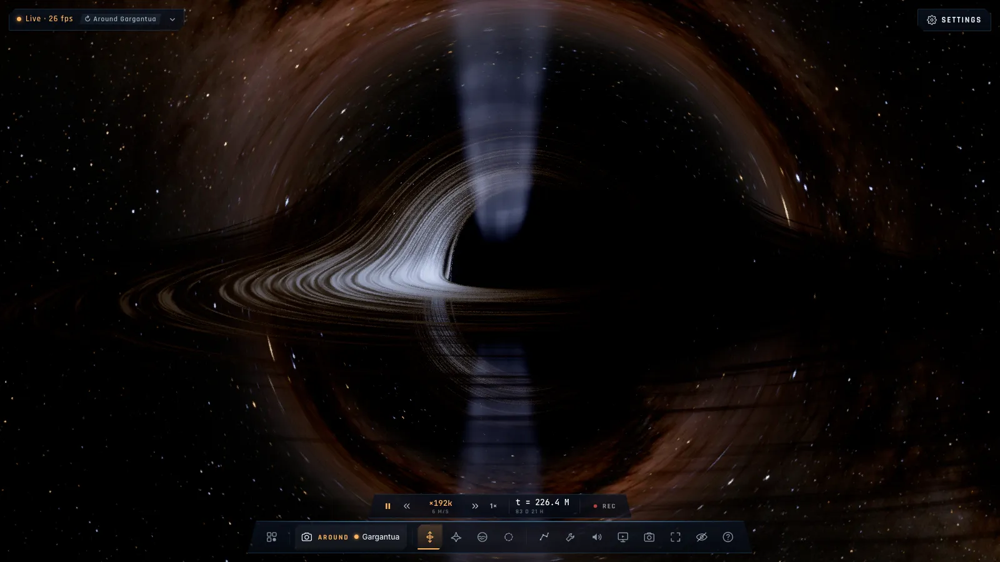
La barre d'outils
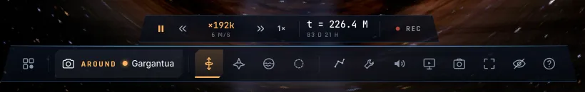
- ⊞ Scènes — la galerie de toutes les scènes
- 📷 Caméra — placement, cible, objectif, télescope (la vue et la cible sont écrites à côté)
- ⇕ Jet — le jet relativiste
- ✦ Ranger — activer / désactiver le vaisseau (K)
- ⊜ Cinéma — surface liquide du trou de ver
- ◌ Guide — guide analytique de l'ombre
- ⟋ Ciel — la carte du ciel
- 🔧 Outils — les outils de jeu (F2)
- 🔊 Son — son activé / coupé
- 🖥 Rendu — rendu hors ligne & vidéo
- 📷 PNG — capture d'écran (P)
- ⛶ · 👁 · ? — plein écran · masquer l'interface · aide
Les scènes
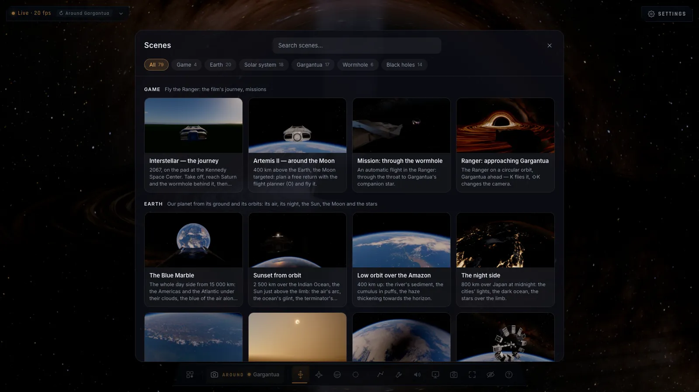
Les réglages
Le bouton Settings (ou M hors vol, ⇧M en vol) ouvre le panneau : la scène, vos préréglages, la qualité, puis des onglets Camera · Scene · Matter · Sky · Physics · Render · Game. Chaque réglage modifié se remet par défaut d'un clic sur son point ; ⌘Z annule.

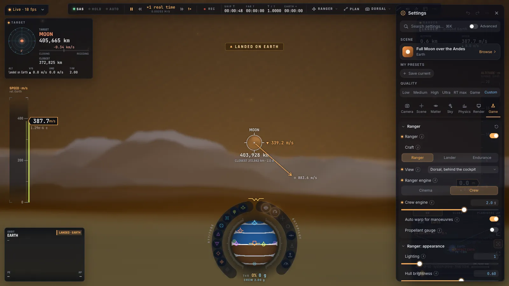

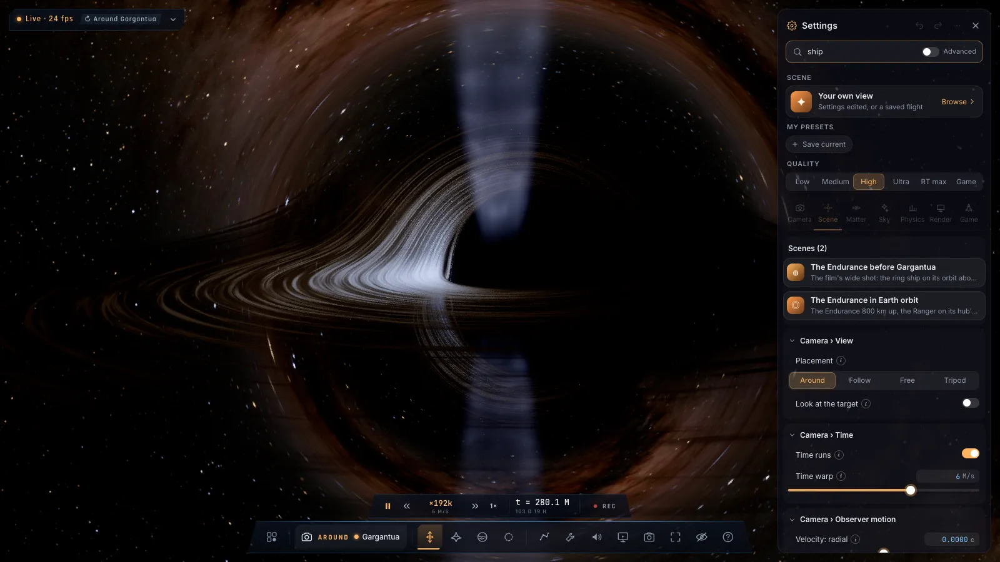
Activer ou désactiver le vaisseau
Le bouton ✦ Ranger de la barre d'outils (ou K) fait apparaître le vaisseau dans n'importe quelle scène et vous met aux commandes : la barre d'outils laisse place au HUD de vol. ⇧K en vol vous fait quitter le vaisseau ; la caméra redevient libre et la barre d'outils revient.

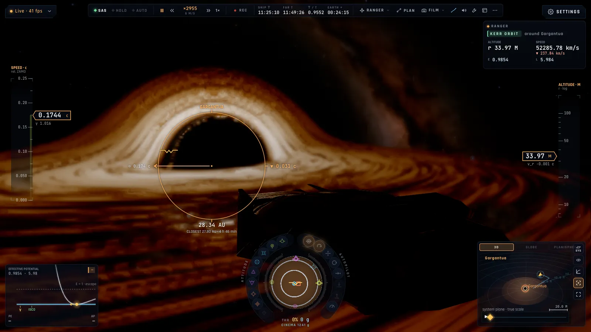

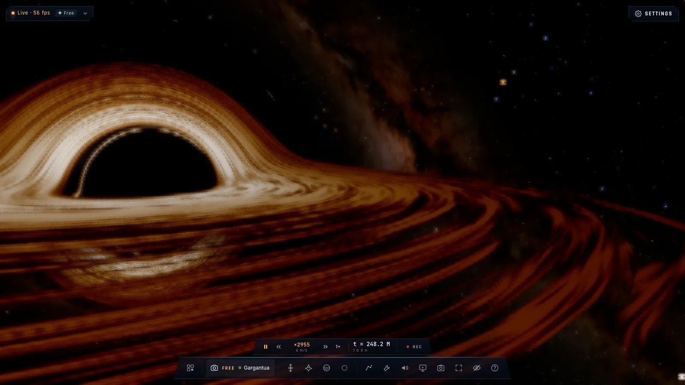
Les autres panneaux

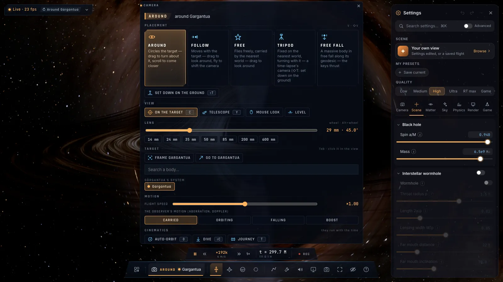

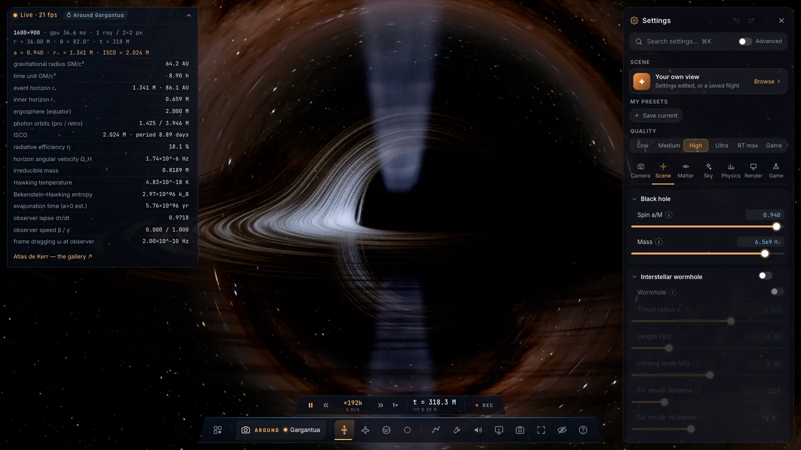

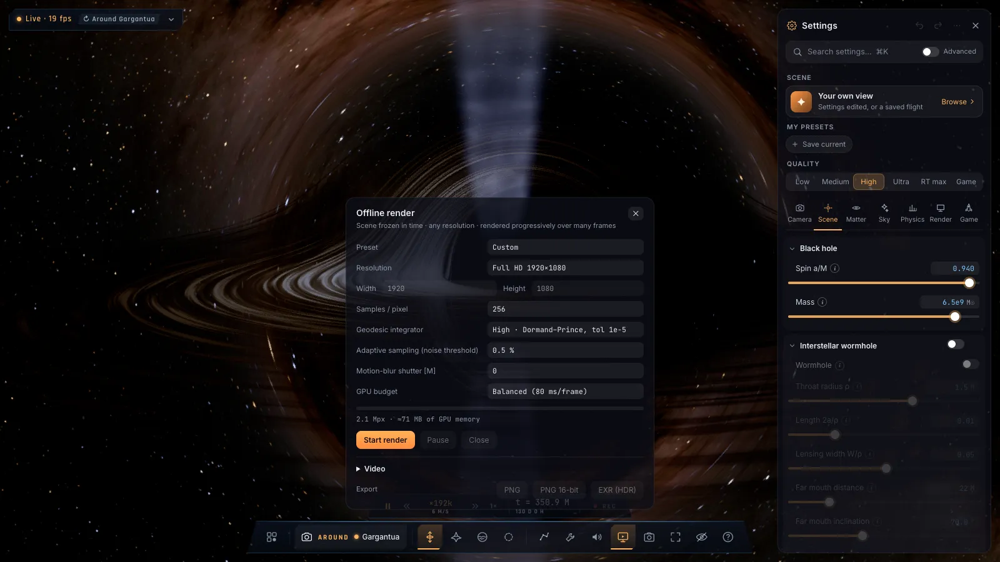

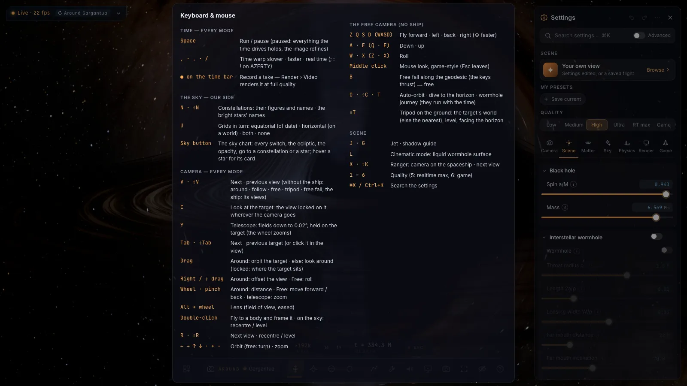
Le parcoursLe voyage du film, de la Terre à Gargantua
La scène game:interstellar commence le 1er janvier 2067 à 10 h, le Ranger posé sur le pas de tir de Kennedy, en temps réel. Le système solaire est à l'échelle, les planètes à leur vraie place (éphémérides de la NASA).
- DécollerAppuyez sur U : l'autopilote fait le virage gravitationnel jusqu'à l'orbite basse. Vous pouvez aussi décoller à la main : gaz à fond (W en AZERTY), puis inclinez doucement le nez vers l'est.
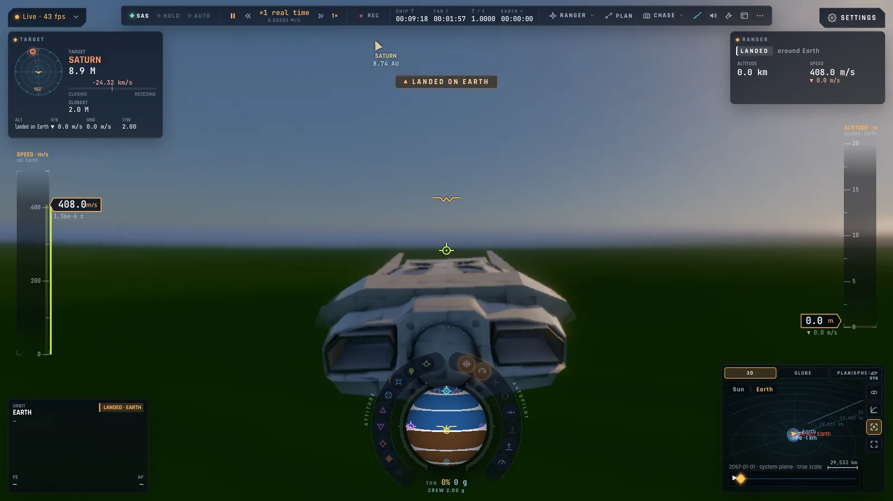
1er janvier 2067 : le Ranger posé sur le pas de tir, Saturne visée. 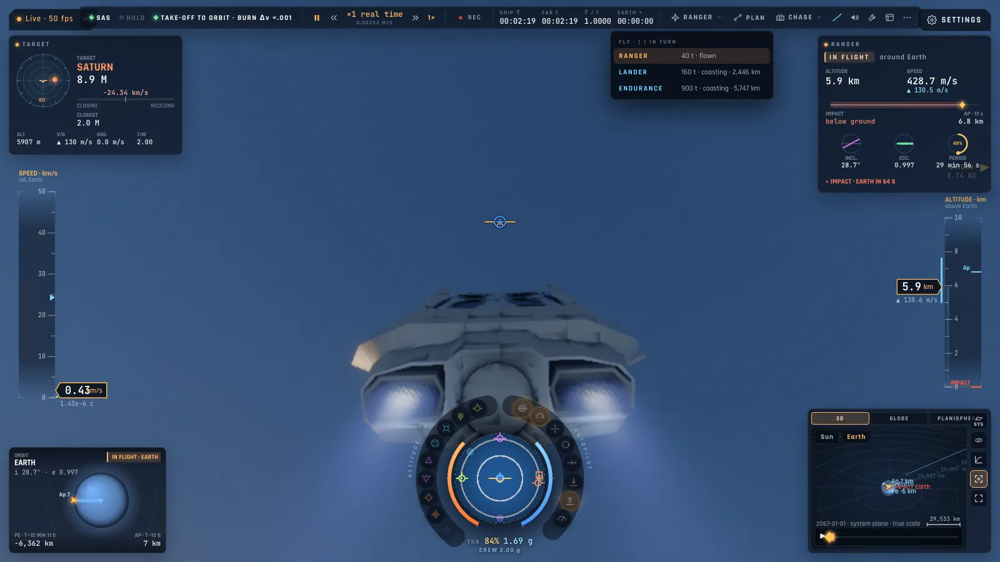
Quelques dizaines de secondes après U : moteurs allumés, « TAKE‑OFF TO ORBIT ». - Viser SaturneOuvrez la carte avec M. Un clic sur un astre le prend pour cible ; Tab / ⇧Tab font défiler les cibles. Saturne est la cible par défaut.
- Planifier le transfertAppuyez sur O pour l'onglet MISSION de l'ordinateur de bord : choisissez la destination et l'arrivée (Orbit, Flyby, rendez‑vous, passage du trou de ver…), cliquez PLAN — le trajet s'affiche sur la carte —, puis EXECUTE. Les allumages se font tout seuls ; accélérez le temps avec . entre deux.
- Trouver le trou de verIl attend à 0,7 UA derrière Saturne. Ciblez‑le sur la carte puis 0 : l'autopilote d'approche vous y conduit.
- TraverserDe l'autre côté : Gargantua (10⁸ masses solaires, spin 0,998), son disque, et les mondes de Miller, Mann et Edmunds. Mêmes outils : carte, planificateur, autopilotes.
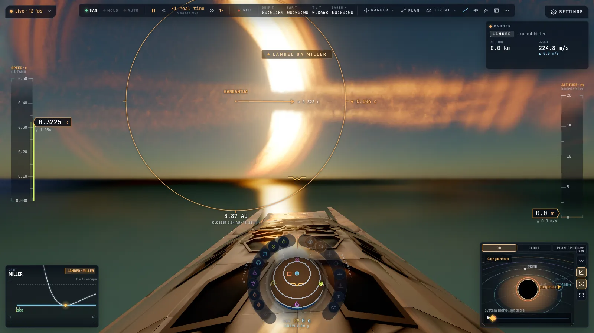
Posé sur Miller, Gargantua au‑dessus de l’océan. - Se poserG pose le vaisseau sur le monde visé. Depuis le sol, U redécolle.


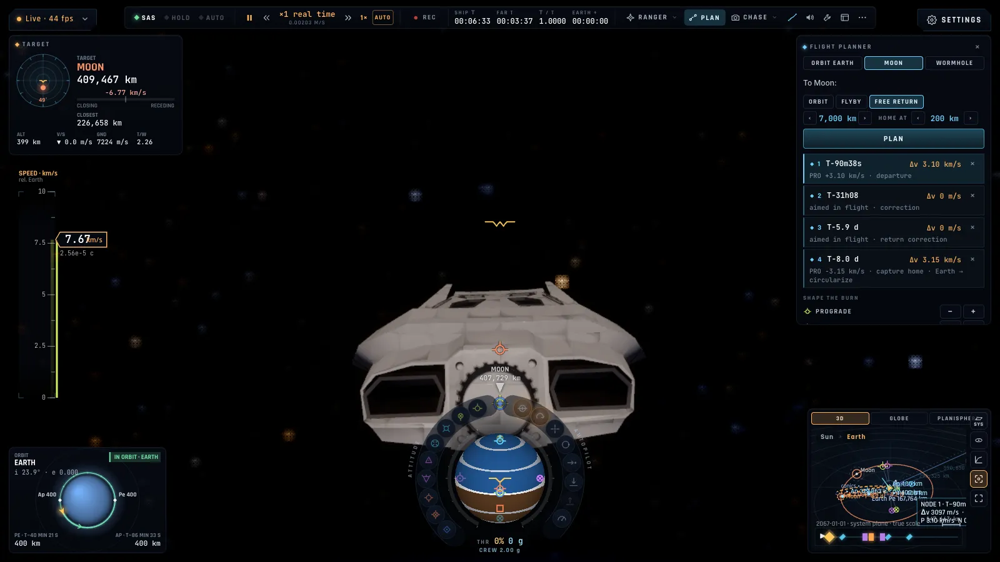

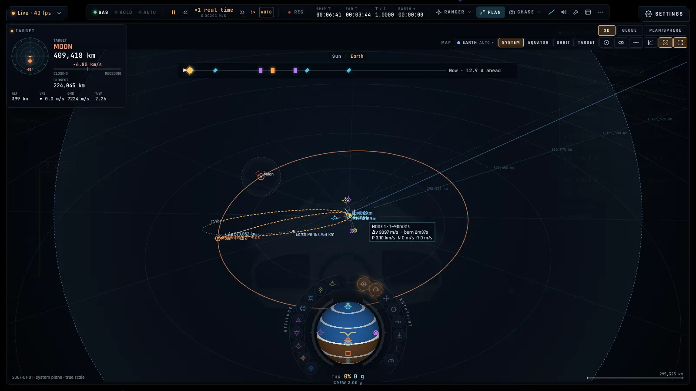
Le jeu se sauvegarde tout seul dans le navigateur et reprend là où vous l'avez laissé à la visite suivante. Les autres scènes (galerie Scenes dans la barre d'outils) sont des points de vue libres : le trou noir, l'ISS, la flotte, les mondes de Gargantua…
Piloter le RangerLa disposition de Kerbal Space Program, adaptée à l'AZERTY
Les touches de vol sont lues par leur position physique : sur un clavier AZERTY, ce sont Z Q S D, A E et W X. Elles ne servent qu'à voler — aucun autre raccourci n'est posé dessus.
Le HUD de vol
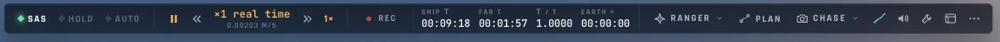
- En haut à gauche — la cible : distance, vitesse d'approche, plus courte distance
- En haut à droite — le Ranger : statut (posé, en vol, en orbite…), altitude, vitesse, Pe · Ap
- À gauche / à droite — les échelles de vitesse et d'altitude
- En bas à gauche — l'orbite à l'échelle autour de l'astre
- En bas au centre — la boule de navigation, les maintiens et les autopilotes
- En bas à droite — la mini‑carte (3D · Globe · Planisphère)

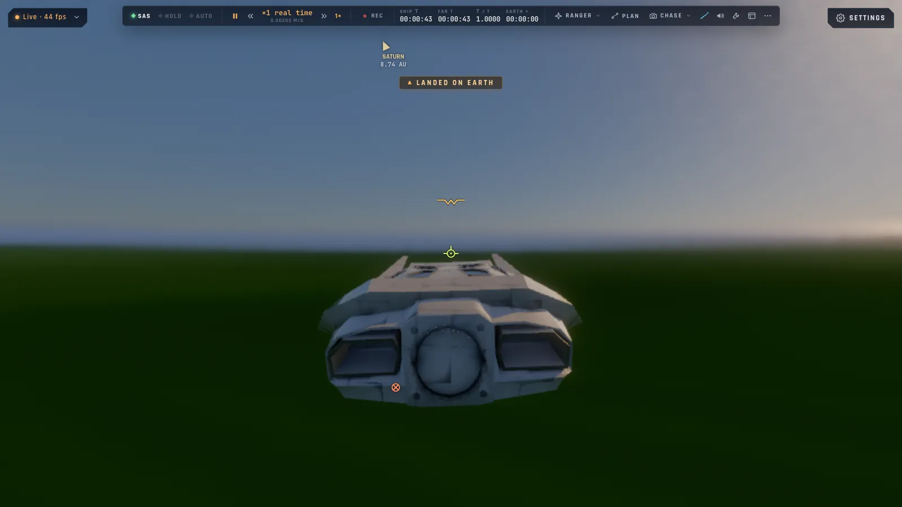
Les commandes de vol
| AZERTY | QWERTY | Action |
|---|---|---|
| Z S | W S | Tangage : piquer · cabrer |
| Q D | A D | Lacet : gauche · droite |
| A E | Q E | Roulis |
| ⇧ · Alt ↑ · ↓ | idem | Gaz : monter · baisser (maintenu) — dans la vue Cabin, les flèches tournent le regard |
| W · X | Z · X | Plein gaz · gaz coupés |
| I K · J L · H N | idem | RCS (translation) : bas/haut · gauche/droite · avant/arrière |
| ⇪ Verr.Maj | Caps Lock | Commandes de précision (rotation, gaz et RCS fins) |
| T | T | SAS : maintien de l'attitude |
| R | R | Alignement du roulis : les ailes dans le plan de l'orbite, le nez tenu |
| F · ⇧F | F · ⇧F | Dans l'air : voler en fusée · en avion · avec l'ordinateur de vol — l'antigravité |
| P · ⇧P | P · ⇧P | Volets (rentrés · mi · pleins) · aérofrein |
| G | G | Train d'atterrissage : sorti · rentré (8 s ; verrouillé au sol ; une alarme s'il est rentré bas et lent) |
| F4 | F4 | Assisté : vous pilotez, le directeur de l'autopilote montre où pointer et combien de gaz |
| F3 | F3 | Spectateur : une caméra libre, le vaisseau continue (F3 ou V pour revenir) |
| F6 | F6 | TARS : tapé, sa console ; tenu, lui parler (voir TARS) |
| Entrée | Enter | Acquitter l'alarme principale : le voyant éteint, l'alarme muette |
| ⌫ | Backspace | Reprendre la main : arrête la mission automatique, le maintien et l'autopilote en cours |
| Échap | Esc | Ferme le panneau du dessus ; sinon le menu pause (le temps s'arrête) : reprendre, sauvegarder, charger, réglages |
| ⇧K | ⇧K | Quitter le Ranger (caméra libre) — K pour y revenir |
Les trois vaisseaux
[ et ] passent d'un vaisseau à l'autre : le Ranger, le Lander et l'Endurance. Ceux qu'on ne pilote pas continuent leur trajectoire — et leur rotation — comme on les a laissés.
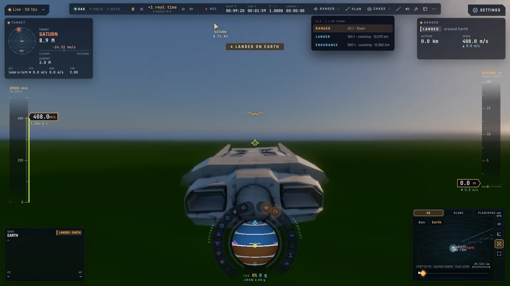
Les vues de bord
V / ⇧V font défiler les caméras du vaisseau : le cockpit (le siège du pilote, avec ses écrans), la coque, autour du vaisseau, libre, survol… ⇧R ramène la caméra à sa place d'origine. Glisser à la souris regarde autour ; un double‑clic regarde droit devant. ² règle la densité du HUD : complet · minimal · vue nette.
Dans le cockpit, les écrans affichent la vraie télémétrie du vol : devant le pilote l'horizon artificiel (assiette, vitesse, altitude, vitesse verticale) et la cible à côté ; devant le copilote l'orbite à l'échelle et les systèmes (poussée, ergols, SAS, maintien, autopilote) ; entre les sièges l'amarrage et le plan de vol ; sur les côtés et à l'arrière les horloges et le journal du pilote. Les manches bougent avec les commandes.
La vue Cabin laisse se déplacer dans la cabine : Z Q S D · A E déplacent la caméra (⇧ plus vite), glisser à la souris ou les flèches ← → ↑ ↓ tournent le regard — le vaisseau continue sa route, gaz inchangés. De même, dans la vue extérieure Free, les touches de vol déplacent la caméra autour du vaisseau au lieu de le piloter.

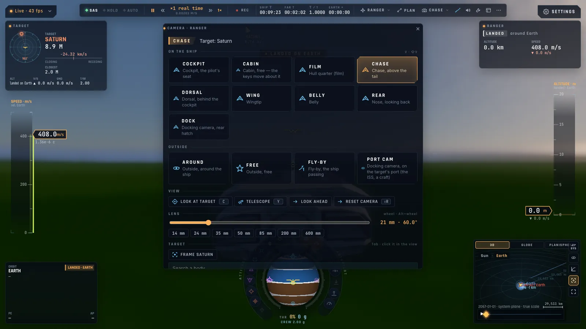

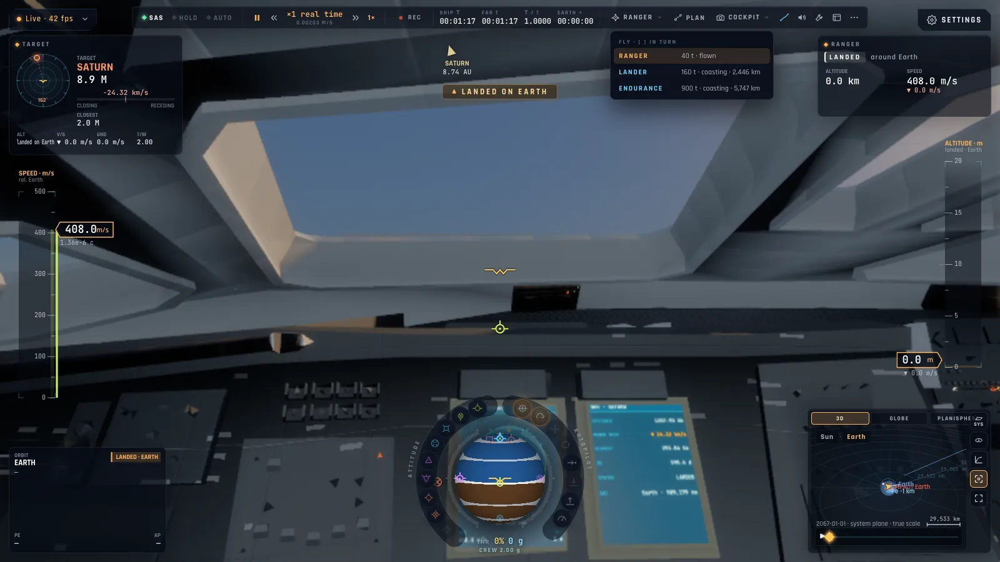
Maintiens & autopilotesLes chiffres du haut du clavier, en vol
Ils sont aussi sur la couronne de la boule de navigation : à gauche ATTITUDE (les maintiens), à droite AUTOPILOT (les autopilotes). Un clic les active.
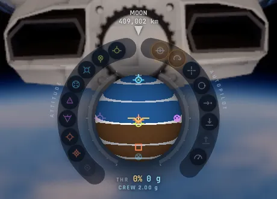
| Touche | Effet |
|---|---|
| 1 2 | Tenir le prograde · le rétrograde |
| 3 4 | Tenir le radial + · radial − |
| 5 6 | Tenir la normale + · normale − |
| 7 | Tenir la cible (ANTI et NODE sont sur le panneau du HUD) |
| 8 | Autopilote : tenir la position |
| 9 | Autopilote : circulariser l'orbite |
| 0 · ⇧0 | Autopilote : approche de la cible · orbite autour de la cible |
| F7 | Autopilote : atterrissage propulsé, ici |
| ⇧G | Rentrée & atterrissage : depuis l'orbite, la poussée de désorbitation pour un site (l'onglet LAND de l'ordinateur le choisit), la rentrée guidée, le plané, la piste |
| U | Autopilote : décoller (virage gravitationnel jusqu'en orbite) |
| B | Autopilote : amarrage (l'ISS à moins de 3 km, ou un autre vaisseau de la flotte) |
| F4 | Assisté : l'autopilote vous guide au lieu de piloter |
Les autopilotes rendent la main à votre accélération du temps quand ils ont fini. Pendant la croisière, le SAS affiche PRO.
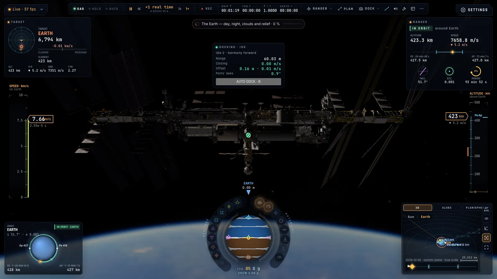
Les aides au pilotage du HUDTracées dans la vue, là où elles servent
Par‑dessus la vue, en cabine et en poursuite (allégées dans les vues extérieures), chacune avec son interrupteur dans Réglages › HUD aids :
- Près d'un astre — l'horizon et l'échelle de tangage à leur vraie place, la bande de cap en haut (nez, route, cible), l'échelle de roulis, les marqueurs radial et normal ; une flèche au bord de l'écran vers ce qui en sort.
- Dans l'air — l'angle d'attaque posé sur la symbologie : un crochet vert sur l'incidence de meilleure finesse, un repère ambre à 85 % du décrochage, une barre rouge au décrochage (le symbole du nez entre eux montre la marge) ; la bille de dérapage ; le chevron d'énergie (au‑dessus des ailes on prend de la vitesse) ; le facteur de charge ; le directeur de vol du calculateur.
- Le futur — la trajectoire prédite en perspective, les repères +10 / +30 / +60 s et ¼ d'orbite, le point d'impact au sol ou d'entrée dans l'air avec son compte à rebours.
- L'approche — la piste à sa place, son axe prolongé, le point visé de la pente (le vecteur vitesse dessus : on est sur la pente), la distance, l'écart d'axe, FLARE ; à la verticale, le radar de dérive, la vitesse verticale et le compte à rebours de l'allumage d'arrêt.
- Dans l'espace — l'encadré d'allumage (compte à rebours, Δv, durée, visée) ; à l'amarrage, les portes le long de l'axe du port et le viseur dans l'axe.
- Près de Gargantua — l'encadré relativité : dτ/dt, γ, Doppler du ciel devant, orbite liée ou évasion, ISCO, orbite des photons, horizon, marée.
La carte & le planificateurVoir où l'on va, et y aller
La carte 3D — M en vol
| Glisser | Tourner autour du point visé |
| Clic droit glissé · ⇧ glissé | Déplacer la vue |
| Molette | Zoomer vers le pointeur |
| Clic sur un astre | Le prendre pour cible |
| Double‑clic sur un astre | Le centrer (dans le vide : retour au cadrage automatique) |
| Clic sur la trajectoire | Poser un nœud de manœuvre ; tirer ses poignées pour régler le Δv ; clic droit ou Suppr pour l'enlever |
| Survol d'un astre | Sa fiche : distance, rayon, période, sphère d'influence |
En plein écran, la carte dessine ses astres sur la carte graphique : les vraies images des planètes, les nuages et les lumières des villes de la Terre, les anneaux de Saturne, le disque et l'anneau de photons de Gargantua. L'ordinateur de bord est à gauche, son analyse à droite (chacun se replie), et une bande compacte en bas donne l'altitude, la vitesse, la périapside, l'apoapside et les boutons du hub. La barre de la carte choisit le Focus (l'astre au centre), le Plane (plan de référence : écliptique, équateur, orbite du vaisseau ou de la cible), la vue de dessus / en biais / par la tranche, l'échelle Log pour voir à la fois tout le système et une orbite basse, et la légende (ce que signifie chaque trait et chaque repère). La frise temporelle en bas montre où tout sera : faites glisser la poignée, cliquez sur un repère (nœud, approche au plus près, entrée dans une sphère d'influence, périapside, impact…) pour y sauter.
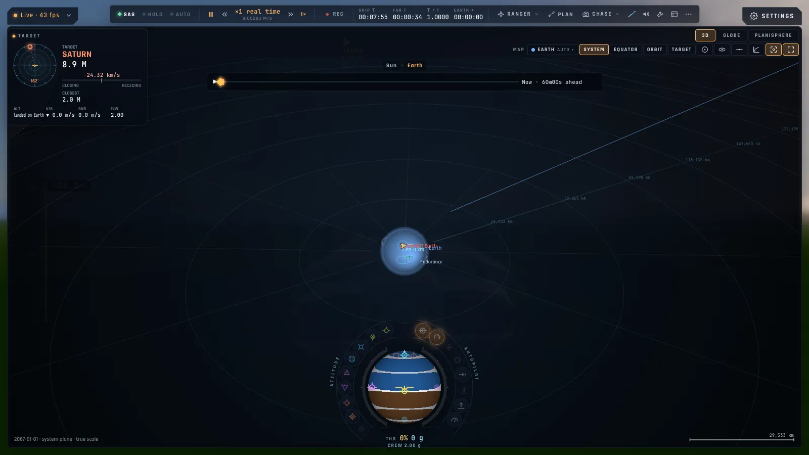
Dans la vue elle‑même, ⇧Y affiche la trajectoire future sous forme de tube cyan.
Les missions — O en vol (l'onglet MISSION de l'ordinateur de bord)
- Choisir la destinationDans la liste groupée par astre : planètes, lunes, l'ISS, les vaisseaux, le trou de ver — ou, de l'autre côté, Miller, Mann, Edmunds, l'étoile compagne, l'embouchure.
- Choisir l'arrivéeOrbit (transfert puis capture en orbite circulaire, à l'altitude voulue), Flyby (survol), Free return (tour de la Lune et retour sans allumage, comme Apollo 13 ou Artemis II), rendez‑vous avec un vaisseau ou l'ISS ; la fenêtre (la prochaine, ou partir maintenant).
- PLANLe trajet est calculé (en N corps de notre côté, sur les géodésiques de Kerr autour de Gargantua, en arrière‑plan) puis tracé en violet sur la carte, le globe et le planisphère avant d'être exécuté, avec chaque allumage, son Δv, les dates et l'arrivée.
- EXECUTEAdopte l'aperçu et le vole (TO THE PLAN l'adopte sans l'exécuter, DISCARD l'efface) ; le vaisseau s'oriente et allume tout seul à chaque nœud, corrections en route comprises. Vous pouvez aussi créer vos nœuds à la main (un clic sur la trajectoire) et les façonner.
Les opérations de l'onglet ORBIT (mise en orbite à l'altitude et l'inclinaison voulues, circulariser, apoapside, périapside, Hohmann, inclinaison, résonance) sont prévisualisées de la même façon. Les boutons du hub (HOLD POS, CIRC, APPROACH, LAND, TAKE OFF, ENTRY) lancent exactement les mêmes opérations que l'ordinateur de bord.
Caméra & tempsValables dans tous les modes, en vol comme hors vol
Le temps
| AZERTY | QWERTY | Action |
|---|---|---|
| Espace | Space | Lancer · mettre en pause (en pause, l'image s'affine) |
| ; · : | , · . | Accélération du temps : moins vite · plus vite (jusqu'à ×1 000 000) |
| ! | / | Retour au temps réel |
| ● sur la barre du temps | Enregistrer une prise — Render › Video la rend en pleine qualité | |
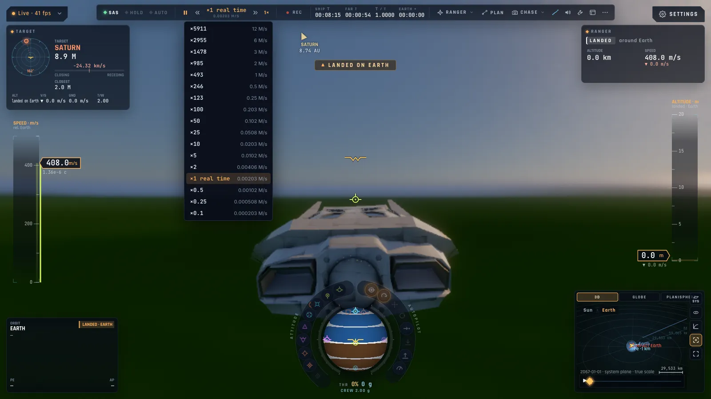
La caméra
| V · ⇧V | Vue suivante · précédente (sans vaisseau : autour · suivi · libre · trépied · chute libre) |
| C | Regard verrouillé sur la cible, où que soit la caméra |
| Y | Télescope : champ jusqu'à 0,02°, tenu sur la cible (la molette zoome) |
| Tab · ⇧Tab | Cible suivante · précédente (ou un clic dessus dans la vue) |
| Glisser | Tourner autour de la cible · sinon regarder autour |
| Clic droit · ⇧ glissé | Autour : décaler la vue · libre : roulis |
| Molette · pincer | Distance · avancer / reculer · zoom du télescope |
| Alt + molette | Objectif (champ de vision) |
| Double‑clic | Voler jusqu'à un astre et le cadrer · sur le ciel : recentrer / remettre à niveau |
| R · ⇧R | Vue suivante · recentrer (hors vol) |
| ← → ↑ ↓ · + − | Tourner (libre : pivoter) · zoom |

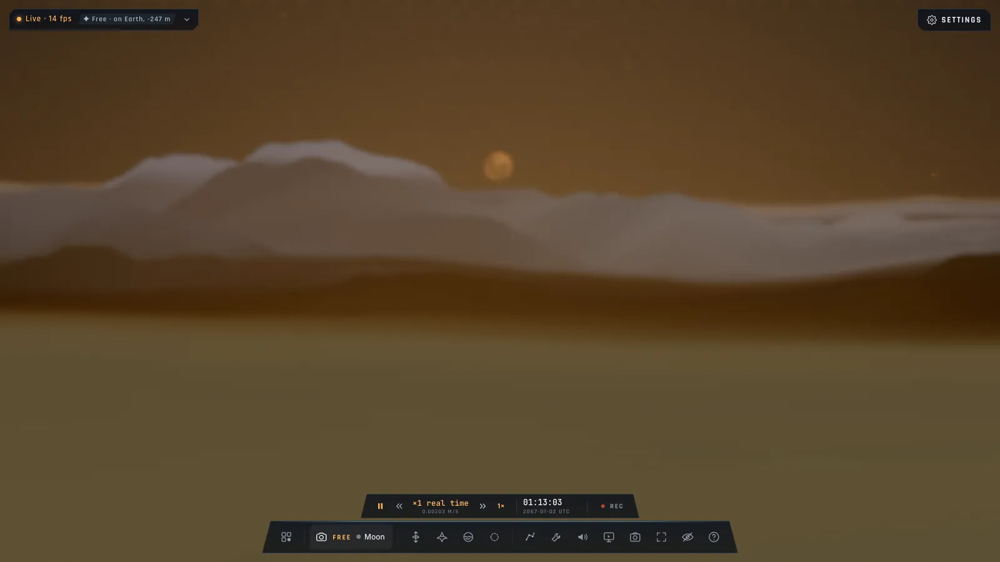

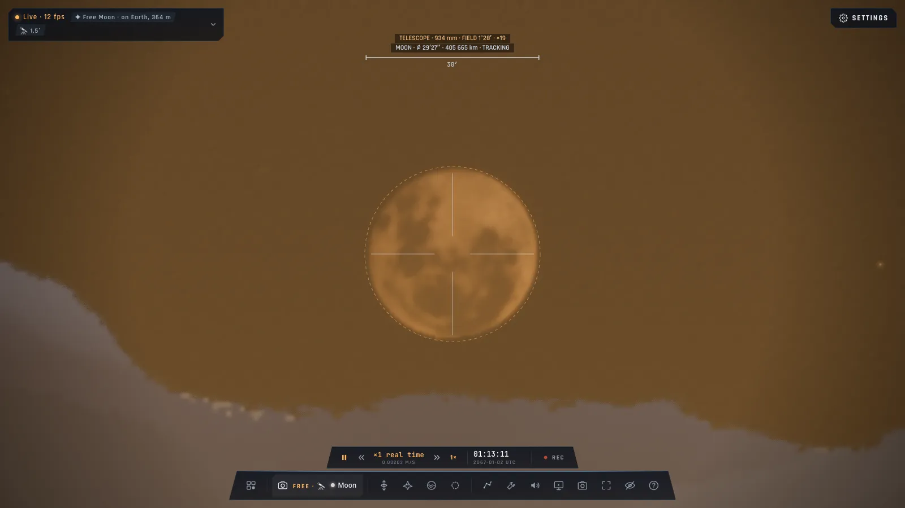
La caméra libre (sans vaisseau)
| Z Q S D | Avancer · gauche · reculer · droite (⇧ plus vite) |
| A · E | Descendre · monter |
| W · X | Roulis |
| Clic du milieu | Regard à la souris, comme dans un jeu (Échap pour sortir) |
| B | Chute libre le long de la géodésique (les touches poussent) ⟷ libre |
| O · ⇧C · T | Orbite automatique · plongée vers l'horizon · voyage par le trou de ver |
| ⇧T | Trépied posé au sol du monde visé (sinon le plus proche), face à l'horizon |
Toutes les autres touchesLe ciel, la scène, l'interface
| Le ciel (notre côté) | |
|---|---|
| N · ⇧N | Constellations · noms des étoiles brillantes |
| U | Grilles : équatoriale · horizontale · les deux · aucune |
| Bouton Sky | La carte du ciel complète |
| Réglage Réfraction atmosphérique | L'air de la Terre relève les astres d'un demi-degré à l'horizon : le Soleil couchant aplati, encore vu quand il est déjà dessous ; au téléobjectif, son bord haut vert et, à la dernière seconde, le rayon vert (allumée par défaut) |
| La scène | |
|---|---|
| J · G | Jet · guide de l'ombre |
| L | Mode cinéma : surface liquide du trou de ver |
| K · ⇧K | Monter à bord du Ranger · vue suivante |
| 1–6 | Qualité (5 : temps réel max, 6 : jeu) |
| L'interface | |
|---|---|
| M · ⌘K | Réglages · les chercher |
| I | Détails & mesures physiques |
| H · F · P | Masquer l'interface · plein écran · capture PNG |
| ⌘Z · ⇧⌘Z | Annuler · rétablir |
| F2 | Outils de jeu |
| ? | Aide‑mémoire des touches |

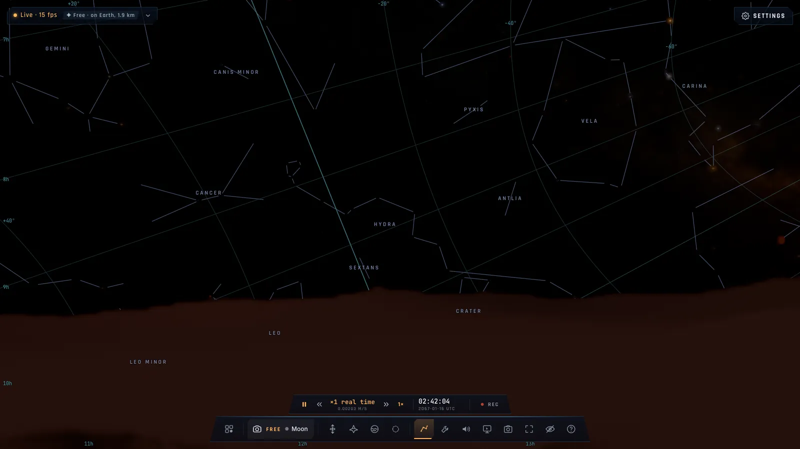

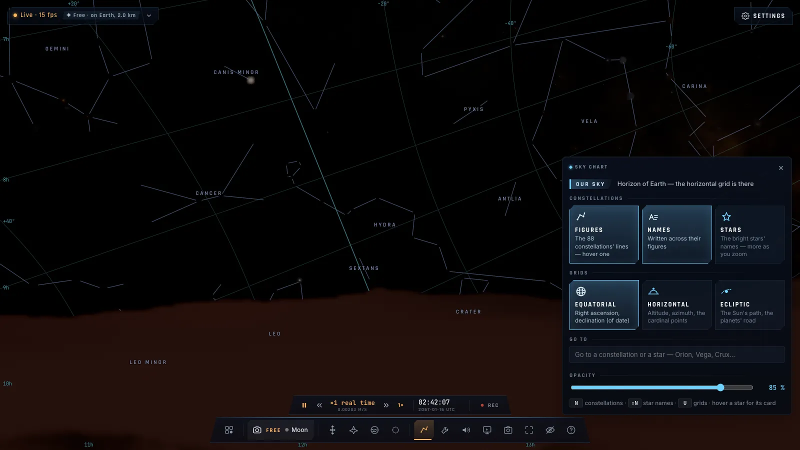
En vol, certaines lettres changent de sens (M carte, O planificateur, U décollage, G atterrissage, B amarrage…) : ce sont celles des sections précédentes qui s'appliquent.
Le cockpitVue Cockpit : tout se commande au pointeur
Dans la vue cockpit, une vingtaine de commandes répondent au pointeur, comme les touches : le levier du train (qui voyage jusqu'à sa position), les volets, l'aérofrein, les gaz, le SAS, les maintiens, les autopilotes, les feux, l'éclairage de la cabine, le chronomètre. Survolées, elles disent ce qu'elles font.
- Huit écrans à pages — PFD (assiette, vitesse, altitude ; dans l'air l'incidence, l'énergie, le directeur), ORBIT, NAV, SYSTEMS, DOCKING, PLAN (les nœuds ou le graphe de l'assistance), CLOCKS, LOG, et en approche APPROACH et LANDING. Les onglets en haut de chaque écran changent sa page ; un second clic le rend à sa page automatique.
- Les lumières — la cabine baissée la nuit, rouge en mode NIGHT, éclairée par ses écrans ; les feux de navigation, les stroboscopes et les phares d'atterrissage sur la coque.
- Le rapport de vol — après un posé ou un amarrage, une note sur 20 et sa lettre : vitesse, axe, taux de chute, précision.
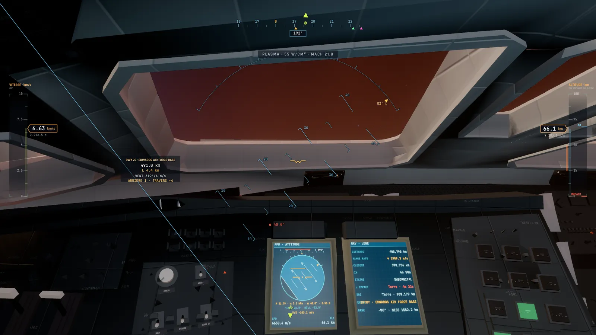
ÉclipsesLe bouton Éclipses du HUD, le menu pause
Le calculateur d'éclipses couvre tout le système solaire, de 1990 à 2150 : les éclipses de Soleil (totales, annulaires, hybrides, partielles) avec leur carte — la bande de totalité, les zones de partialité, le maximum — et ce qu'on en voit d'ici (les contacts, l'obscuration, la Lune passant devant le Soleil, à faire glisser ou jouer) ; les éclipses de Lune avec l'ombre de la Terre et la carte de visibilité ; les transits de Mercure et Vénus ; les phénomènes des satellites (Io dans l'ombre de Jupiter, son ombre sur lui…) ; et le Soleil caché vu d'un autre monde (de la Lune, de Mars, d'Io…). Cliquez une carte pour regarder depuis ce lieu ; Aller voir vous y emmène, à la bonne date et vers le Soleil ou la Lune. Au rendu, la Lune éclipsée rougit, les satellites projettent leur ombre, et au ras de l'horizon la réfraction peut montrer ensemble le Soleil et la Lune éclipsée (un sélénélion).
SurimpressionsMode photo › Surimpression…
Comme un photographe sur son trépied, le jeu pose la même vue à des dates différentes et superpose les poses en une seule image. L'analemme : le Soleil à la même heure tous les 1 à 10 jours pendant un an, depuis le même lieu — son huit au‑dessus du paysage au crépuscule, cadré tout seul. On peut écrire la date à côté des Soleils (une par mois ou toutes) et leur position (azimut, hauteur, et le lieu dans un coin). L'image se télécharge en PNG, jusqu'en 4K. TARS sait aussi la faire : « fais‑moi l'analemme de Paris à midi », ou /analemma.
Météo & aéroportsLe bouton Météo du HUD, le menu pause
Beau temps, nuageux, couvert, brouillard, pluie, orage, vent, poussière de Mars, au hasard — ou la vraie météo, partout sur la Terre et à la date du jeu : celle du modèle Open-Meteo (ses prévisions jusqu'à 15 jours, ses archives depuis 1940 — le ciel réel du jour d'une éclipse passée), le METAR de la piste quand la date est maintenant ; hors de portée, un temps plausible. Vue de l'espace, la Terre porte alors les nuages de ce jour-là, tels que les satellites les ont photographiés (depuis 2000), et la carte météo montre leur image. Le vent souffle avec la hauteur, la turbulence secoue, les nuages ont leurs couches, le brouillard son sommet.
- Les aéroports vivants — balisage OACI (rampe d'approche, PAPI, axe, bords), manche à air, la piste en service choisie face au vent.
- L'approche — les cartes d'approche (onglet CARTES de la tablette), le guidage MLS, les minima à 60 m ; mal engagé, W (plein gaz) fait la remise de gaz et un nouveau circuit.
- La pluie — en rideaux poussés par le vent, brillante autour des feux ; sur le pare-brise, des gouttelettes et des gouttes qui glissent en laissant leur traînée, que le vent relatif fait remonter en vol ; quelques gouttes sur l'objectif en vue extérieure ; la piste mouillée, ses flaques et les ronds des gouttes ; on l'entend tambouriner sur la verrière. Le temps en pause, elle s'arrête : gouttes figées, silence.
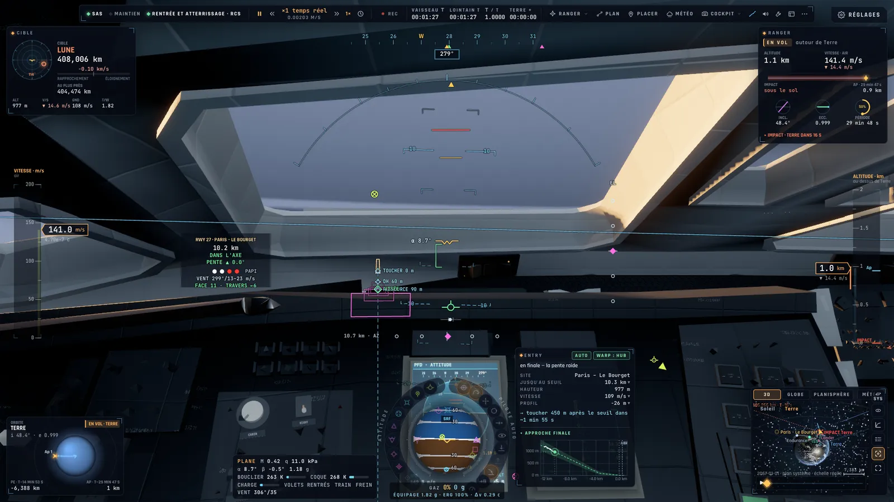
Son, musique & voixRéglages › Jeu › Son
- L'audio spatial — tout est synthétisé en direct : le moteur granulaire, le RCS, le vent, la cabine (étouffée, en vue cockpit), le roulement sur la piste, la station ; au casque, le son est placé en 3D (HRTF), avec l'effet Doppler et le bang supersonique.
- Les annonces — en finale les hauteurs radio (300 … 10 m), « Minimums », « Taux de chute », « Terrain ! Remontez ! », et les alarmes graves du HUD dites à voix haute.
- Le contrôle de mission et la tour — Houston avec le délai de la lumière (rien de l'autre côté du trou de ver), la coupure radio dans le plasma de la rentrée, la tour qui autorise l'atterrissage.
- La musique — le silence, sauf aux grands moments : le décollage, la rentrée, la finale, le trou de ver, Gargantua ; et sur Miller, le tic‑tac.
- Les sous‑titres — chaque voix nommée, au‑dessus du tiers bas de l'écran.
TARS, l'IA de bordF6 — tapé : sa console · tenu : lui parler
TARS est le copilote du Ranger. Hors ligne, il répond avec ses phrases écrites et comprend les ordres courants. Avec votre clé OpenRouter (dans sa console : « Se connecter avec OpenRouter », ou coller une clé — gardée dans ce navigateur seulement), il devient un agent : il pilote, navigue, règle, montre, et se souvient de vous.
Il fait
« Emmène‑nous en orbite autour de la Lune », « pose‑nous à Edwards », « vise Mars et accélère le temps », « coupe la musique et mets la vue cockpit » : il agit tout de suite, sans demander. Avant ce qui ne se défait pas, la partie est gardée sous « Before TARS » — « annule » y revient.
Il propose
« Propose‑moi un plan pour… » : il chiffre (Δv, durée, arrivée) sans rien faire, et vous montre le plan avec Accepter et Refuser (ou « oui » / « non »).
Il montre
La télémétrie en direct (altitude, vitesse, charge, inclinaison, incidence…), le couloir de rentrée, le graphe du hub, des fiches de chiffres, et les vrais écrans du jeu (carte, tablette, écrans du cockpit, rapport).
Il veille
Ses réflexes le réveillent aux moments clés — la fin d'un autopilote, les phases de la rentrée, une alerte, un écart, un rapport — et vous pouvez lui en donner : « toutes les 10 minutes, vérifie le carburant ». Un budget par heure les borne.
Il délègue
Pour une analyse en plusieurs regards, il lance des sous‑agents en parallèle (en lecture seule) et décide ensuite.
Il se souvient
Votre nom, vos préférences, vos échanges, d'une visite à l'autre — onglet Mémoire de sa console, « oublie tout » pour effacer.
Sa console
Son emblème (quatre monolithes) s'anime selon ce qu'il fait : prêt, à l'écoute, réfléchit, agit, parle. Ses actions s'affichent au fil de l'eau, sa liste de tâches se coche, ses onglets donnent l'Échange, ses Agents, ses Réveils, sa Mémoire. On la déplace par sa poignée ⠿ (en haut à droite) ; fermée, une pastille montre ce qu'il fait. Échap arrête un tour en cours.

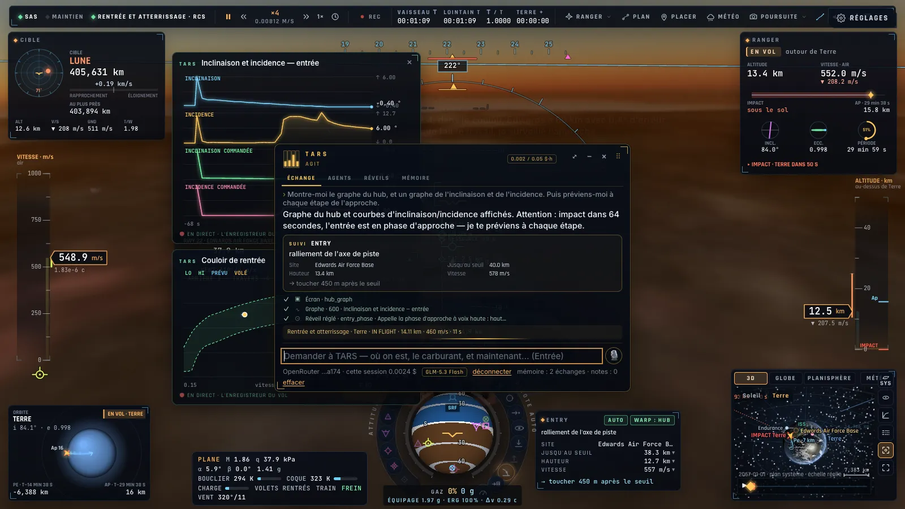

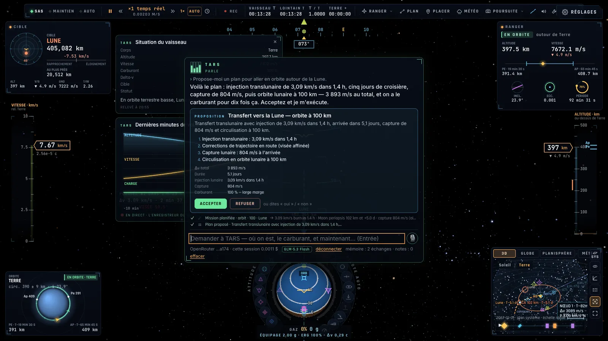
Les commandes « / »
Tout le jeu se commande aussi au clavier, sans le modèle (et sans coût) : tapez /, la liste s'ouvre avec la description de chaque commande ; ↑ ↓ pour choisir, Tab ou Entrée pour prendre ; les arguments se complètent à leur tour (corps, sites, vues, écrans, réglages et leurs valeurs…).
| Commande | Effet |
|---|---|
/target Mars · /cockpit · /chase · /view … · /shipview | La cible, les vues, retour au vaisseau |
/autopilot entry Edwards · /land · /takeoff 300 · /dock · /hold prograde | Autopilotes et maintiens |
/gear down · /flaps 1 · /throttle 0.5 · /sas on · /goaround | Les commandes de vol |
/mission Lune orbit 100 · /maneuver hohmann 800 · /execute | Le calculateur de vol |
/teleport orbit Lune 100 · /teleport glide Edwards · /warp 1000 · /date +24 | Se déplacer, le temps |
/map globe · /show entry_corridor · /sky Orion · /set music off · /quality game | Écrans, ciel, réglages |
/save · /load · /scene … · /undo · /press … · /tool … | Parties, scènes, toute touche, tout outil |
/help · /model · /mode · /plan … · /cost · /clear · /export · /skill save nom | L'agent : aide, modèle, mode, plan, coût, conversation, savoir‑faire |
@ complète un corps, un site, un écran ou un réglage dans une question ; ↑ ↓ rappellent vos questions ; ⇧Tab change son mode : Agir (il agit), Proposer (il propose chaque plan avant d'agir), Observer (il lit et montre, n'agit pas).
Réglages › Jeu › TARS : ses remarques, son honnêteté et son humour (« honesty 70 »), le modèle (GLM‑5.3 Flash par défaut, Claude Haiku 5.5…), ses réveils et leur budget par heure. Un vol vers la Lune mené par TARS coûte environ un millième de dollar.
Manettes, HOTAS & écran tactile
Tout périphérique de jeu est reconnu — manette, manche, manette des gaz, palonnier : des profils connus (Thrustmaster T.16000M, TWCS, Warthog, T.Flight ; Saitek/Logitech X52, X56, Extreme 3D Pro ; VKB Gladiator ; les palonniers) ou le vôtre, réglé dans le menu pause › Commandes › Manettes et HOTAS (chaque axe, sa courbe, sa zone morte, la calibration ; chaque bouton lié à n'importe quelle action du clavier). La manette des gaz absolue garde sa position ; les vibrations suivent le moteur, le toucher, les alarmes.
Manette (Xbox · PlayStation)
| Caméra libre | |
|---|---|
| Stick gauche | Avancer · reculer · de côté (L3 maintenu : boost) |
| Stick droit | Tourner autour de la cible · regarder |
| RT · LT (R2 · L2) | Monter · descendre |
| LB · RB (L1 · R1) | Roulis |
| A (✕) | Voler jusqu'à la cible |
| B · X · Y (○ □ △) | Chute libre · orbite auto · vue suivante |
| Croix ◀ ▶ · ▲ ▼ | Cible précédente / suivante · plus près / plus loin |
| R3 · View · Menu | Recentrer · lancer / pause · réglages |
| En vol | |
|---|---|
| Stick gauche | Tangage · lacet |
| LB · RB | Roulis |
| RT · LT | Gaz + · − |
| A | SAS |
| X · Y | Prograde · rétrograde |
| B | Couper les gaz |
| Croix ▲ ▼ | Vue suivante · précédente |
| R3 | Regarder droit devant |
Manette non détectée ? Appuyez sur un bouton avec la page au premier plan. Une manette Xbox 360 filaire dans Chrome, Edge ou Arc se connecte en USB depuis l'aide‑mémoire (?).
Écran tactile
Sur téléphone ou tablette, en vol : un manche en bas à gauche (tirer vers soi : cabrer ; gauche / droite : lacet), une manette des gaz en bas à droite qui reste où on la laisse, et deux boutons de roulis à maintenir. SAS, maintiens, autopilotes et planificateur sont des boutons du HUD.
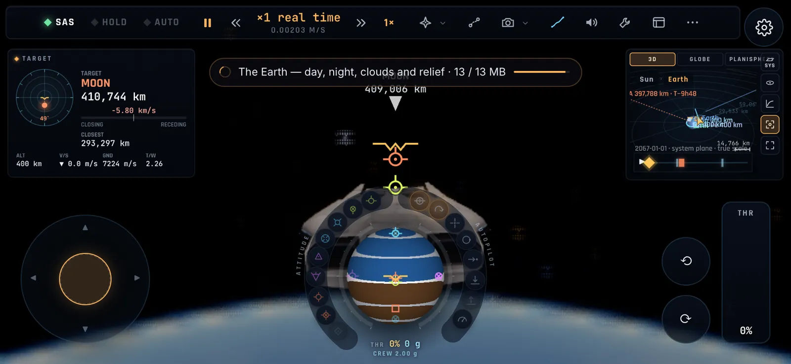
Outils & sauvegardesF2, ou 🛠 dans la barre de mission
Ranger
L'état en direct : sphère d'influence, statut (posé, en vol, suborbital, en orbite…), altitude, vitesses, périapside, apoapside, inclinaison, période, prochain événement.
Place
Mettre le Ranger en orbite autour de n'importe quel astre, ou le poser au sol en cliquant sur un globe ou un planisphère. Raccourcis : orbite basse, pas de tir KSC, orbite lunaire basse.
Target · SOI
La chaîne des sphères d'influence et tous les astres, avec rayon et distance — un clic les vise.
Time
Accélération de ×1 à ×1 000 000, pause, et réglage de la date de la scène.
Saves
Sauvegardes nommées, sauvegarde automatique, export / import d'un fichier, lien à partager vers un moment précis.
Audit & Journal
Des vérifications automatiques de la simulation, et l'historique de la partie : messages du pilote, changements de sphère, sauvegardes.

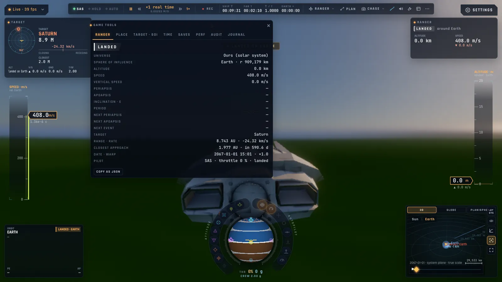

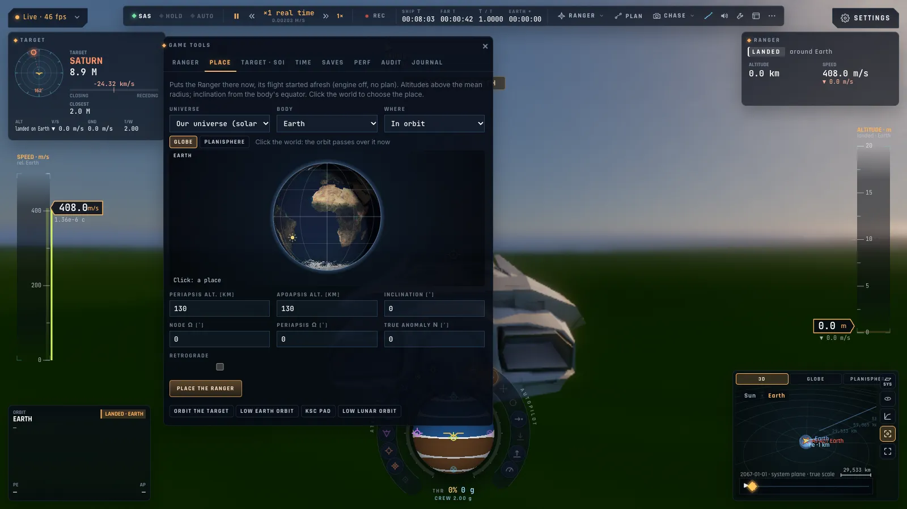

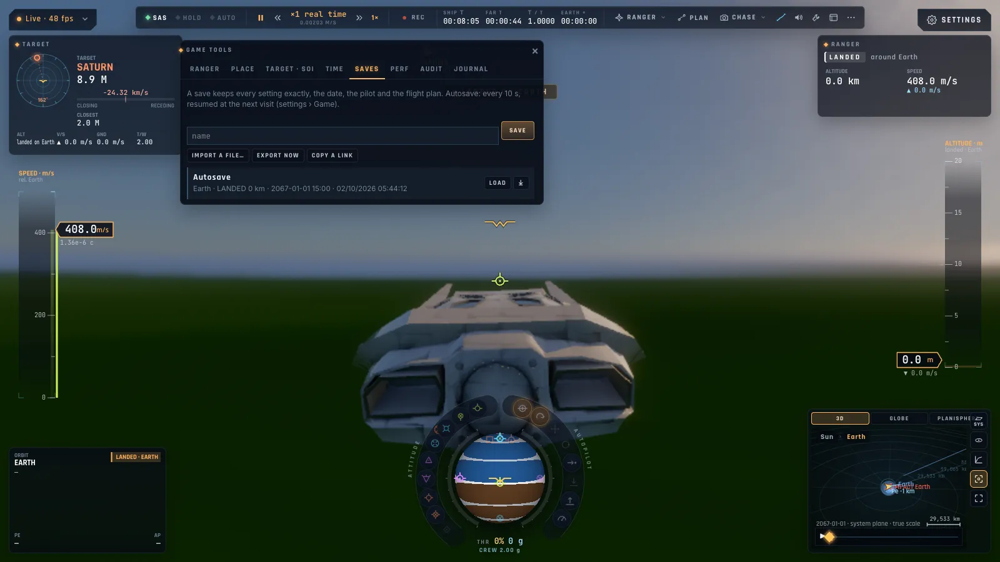
Pour aller plus loin : la console du navigateur expose __bh.game (__bh.game.help() pour la liste) — voir GAME-TOOLS.md et MAP.md.
Astuces
Rien ne bouge ?
Le temps est peut‑être en pause : Espace. Ou revenez au temps réel avec !.
Le voyage est long
Une fois le plan lancé (EXECUTE), le temps s’accélère tout seul entre les allumages (auto‑warp). Vous pouvez choisir le vôtre avec ; : — il reste plafonné pour ne pas rater un allumage.
Perdu dans l'espace ?
M en vol, puis Fit pour recadrer la carte ; ⇧R remet la caméra à sa place.
Demandez à TARS
F6 puis « que dois‑je faire ? », ou /help pour toutes les commandes.
Une belle image
Pause (Espace) pour que l'image s'affine, H pour cacher l'interface, P pour l'enregistrer — ou le mode photo (bouton Photo) : exposition, focale, profondeur de champ, rendu ; « Retour au jeu » pour en sortir. Réglages › Rendu : Afficher les FPS.